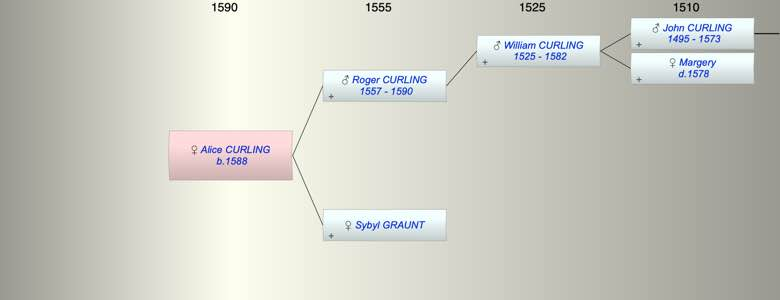

| [Index] |
| Alice CURLING (1588 - ) |
|  |
| b. 1588 at St John in Thanet |
| Parents: |
| Roger CURLING (1557 - 1590) |
| Sybyl GRAUNT |
| Siblings (2): |
| Sylvester CURLING (1582 - 1656) |
| Edward CURLING (1586 - ) |
| Events in Alice CURLING (1588 - )'s life | |||||
| Date | Age | Event | Place | Notes | Src |
| 1588 | Alice CURLING was born | St John in Thanet | Note 1 | ||
| 1590 | 2 | Death of father Roger CURLING (aged 33) | St Lawrence | Note 2 | |
| Note 1: Bap 10 May 1588 dau of Roger ex FMP PR |
| Note 2: buried St Lawrence 23 Jan 1590. Inventory |
| Created on a Mac™ using iFamily for Mac™ on 8 Oct 2023 |